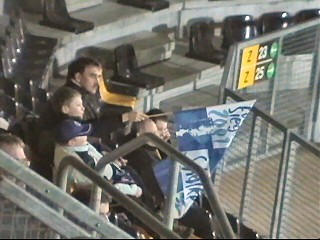
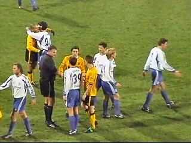

|
Roda JC - Schalke 04 (0-3) 16 januari 2004 |
Nadat ik door Bromsnor aangehouden werd voor
"roekeloos inhalen" op de Rodaring, kwam ik
5 min. te laat voor de aftrap, maar nog juist op
tijd om de verloren gewaande Beavis bij zijn favo
standje te ontdekken.
Koempel Jos oes Sjaatsberg ;-)
150 Schalke-fans. Waar is Roger P. ??????????
In een lummelige wedstrijd waarin Roda een
optisch overwicht had, was het echter Schalke dat
meer beredeneerd en efficiënter speelde.
Hanke scoort simpel 0-1, (36').
Danke Hanke....
Nadat Roda de bal in de 16 van Schalke verloor,
volgde er een p e r f e c t e counter die door
Trojan verzilverd werd: 0-2 (36').

Gemist bij Bremen, maar nu dan toch voor de
lens: Ramon; inmiddels alweer 2 millimeter haar.
Een van de vele missers van Cristiano.

Weggedoken in het uiterste puntje van zuid.
Hey Bert, neem je ook nog een biertje, he he.
Nee Ernie, ik moet nog naar een ander feest.
Groeten aan David :-))
Cziommer scoort in de eindfase 0-3 (86'). Het
was een mooi doelpunt waarbij Roda compleet
werd uitgespeeld.

Roda lijdt de eerste nederlaag in het PLS tegen
een Duitse club en tevens de grootste nederlaag
in de PLS-historie.